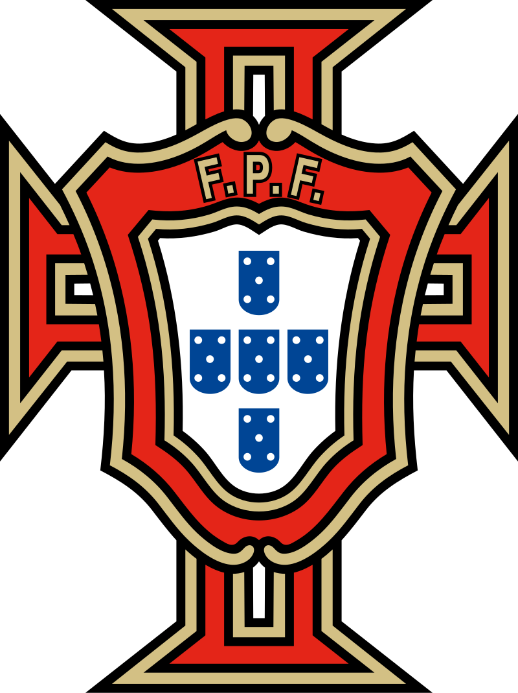
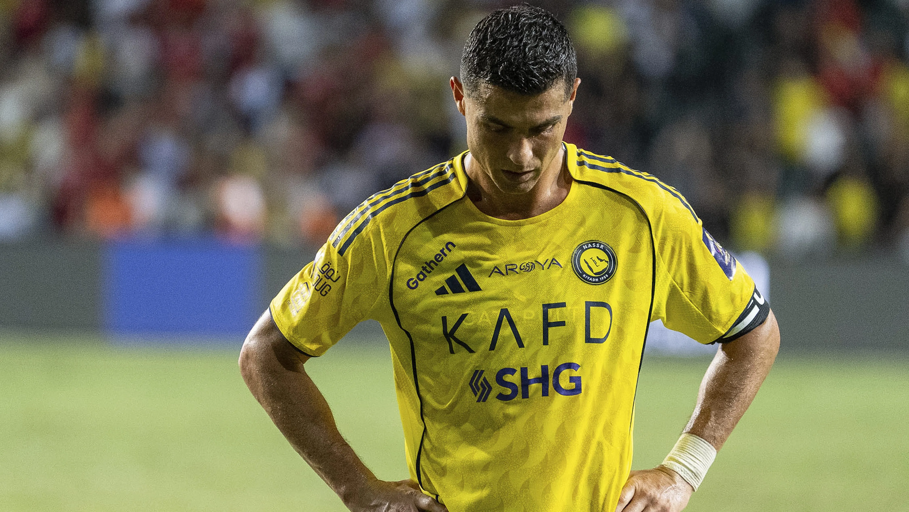

Portugal ha tenido una participación destacada en la historia de la FIFA World Cup, aunque todavía no ha conseguido ganar el torneo. Su mejor resultado fue el tercer lugar en 1966 y el cuarto puesto en 2006.
La selección portuguesa alcanzó reconocimiento mundial gracias a figuras históricas como Eusébio, máximo goleador del Mundial de 1966, y Cristiano Ronaldo, considerado uno de los mejores jugadores de todos los tiempos.
Portugal es conocida por su juego técnico, competitivo y por desarrollar grandes talentos a nivel internacional. En las últimas décadas se consolidó como una de las selecciones más fuertes de Europa y una competidora constante en los grandes torneos internacionales.

Cristiano Ronaldo es un futbolista portugués considerado uno de los mejores de la historia. Ha ganado 5 Balones de Oro, la Eurocopa 2016 con Portugal y es uno de los máximos goleadores de todos los tiempos. Destaca por su talento, disciplina y capacidad para marcar goles
